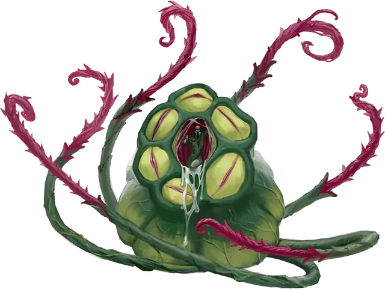

Телоглот особь
Bodytaker Plant
Огромное Растение, Нейтральное Злое

Класс Защиты 16 Инициатива −1 (9)
Хиты 138 (12к12 + 60)
Скорость 10 футов, Плавания 10 футов, Лазания 10 футов
| мод | спас | ||
|---|---|---|---|
| СИЛ | 18 | +4 | +4 |
| ЛОВ | 8 | −1 | −1 |
| ТЕЛ | 20 | +5 | +5 |
| мод | спас | ||
|---|---|---|---|
| ИНТ | 14 | +2 | +2 |
| МДР | 14 | +2 | +2 |
| ХАР | 18 | +4 | +4 |
Уязвимость к урону Яд
Иммунитеты Испуганный, Истощение, Опрокинутый, Ослеплённый, Очарованный
Чувства пассивное Восприятие 12, Слепое зрение 120 футов
Языки Телепатия 120 фт.
Опасность 7 (2 900 опыта; БВ +3)
Особенности
Связь с выплодками. Особь может видеть глазами любых своих выплодков и телепатически общаться с ними в пределах 10 миль от себя. Когда особь умирает, выплодки умирают вместе с ней.
Возрождение. Спустя 1к10 дней после смерти особь возрождается с полными Хитами. Эта особенность не срабатывает, если Хиты особи опущены до 0 уроном Ядом или если останки особи посыпаны солью.
Действия
Мультиатака. Особь совершает три атаки Хлещущей лозой. Она может заменить одну из этих атак использованием Кувшина-ловушки.
Хлещущая лоза. Бросок рукопашной атаки: +7, досягаемость 20 фт. Попадание: 17 (3к8 + 4) Рубящего урона. Если цель — существо Большого размера или меньше, она Схвачена (Сл освобождения от захвата 14) одной из четырёх лоз.
Кувшин-ловушка. Спасбросок Силы: Сл 15, одно Схваченное особью существо Большого размера или меньше. Провал: Цель втягивается в пространство особи и становится заточённой в кувшине, а состояние Схваченный оканчивается. Заточённое существо Ослеплено и Парализовано, а также имеет Полное укрытие от атак и прочих эффектов, исходящих снаружи кувшина. Спустя 2к4 часа заточённое существо умирает, и если оно было Гуманоидом, из кувшина появляется напоминающий это существо Телоглот выплодок.
Существо снаружи кувшина и в пределах 5 футов от особи может действием совершить проверку Силы (Атлетика) Сл 14; при успехеоно освобождает заточённое существо, которое падает Опрокинутым в пространстве в пределах 5 футов от особи. Если особь умирает, заточённое существо теряет состояния Ослеплённый и Парализованный и может освободиться из кувшина, потратив 5 футов перемещения и оказываясь на выходе Опрокинутым.
Реакции
Передача вреда. Условие: По особи попадает бросок атаки, когда в пределах 5 футов от неё находится выплодок. Эффект: Особь получает половину урона от этой атаки, а выплодок получает другую половину этого урона.
Бонус мастерства +3
Среда обитания Болота, Леса, Луга, Холмы
Сокровища Любые
Телоглоты
Ворующая тела инопланетная флора
Телоглоты — разумные организмы, чья родина — давно погибшая планета Материального плана. Чтобы прожить дольше чем их обречённый мир, эти загадочные растения разослали свои семена среди звёзд. Изредка эти семена, похожие на метеориты, падают на плодородные миры и пускают корни. Из них вырастает новая полноценная особь телоглота, стремящаяся расти и множиться, пока весь мир не окажется под властью его вида. Себе в помощники она создаёт жуткие растительные копии местных обитателей — выплодков. Выплодки служат воле растения‑прародителя, проникают в общины и подменяют собой тех, с кого скопированы. Когда приходит время, они стараются изолировать и поймать живых существ, чтобы те стали либо удобрением для особи, либо сырьём для новых выплодков.
Телоглот особь сам хватает жертв мощными лозами и принимает пленников, доставленных слугами‑выплодками. Добычу особь затягивает в прикреплённый к нему кувшин, где пленник медленно растворяется в течение нескольких часов. Когда процесс оканчивается, из кувшина выходит точная копия пленника — покорный выплодок. От исходного существа не остаётся ничего, хотя нерастворённое снаряжение можно извлечь после того, как телоглот будет убит.
Выплодки — продолжения воли особи, и она без колебаний жертвует ими и прикрывается ими в бою. Телоглоты умеют общаться телепатически, но прибегают к этому лишь в отчаянных случаях, предпочитая говорить устами выплодков — иногда сразу нескольких.
Телоглот особь вырастает там, куда упало его семя из космоса, и позже приказывает выплодкам перенести себя в тайное убежище. Совершите бросок по таблице «Логово телоглота» для вдохновения или определите сами, где притаилась особь.
Логово телоглота
| к4 | Телоглот особь растёт… |
| 1 | В здании, переделанном под оранжерею. |
| 2 | В скрытой кальдере или сеноте. |
| 3 | В заросшем круге стоячих камней. |
| 4 | В святилище разрушенного собора. |